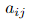
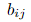
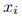
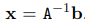
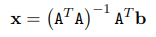

Решавање система линеарних једначина Ax=b
Једна од главних примена матрица је у представљању и решавању система линераних једначина. Octave је погодан за рад са матрицама, самим тим и са овим системима. Нека је дат систем линеарних једначина

где су  и  познате вредности, а наш задатак је да нађемо  тако да истовремено задовољавају горе наведене услове. Овај систем можемо написати и у матричној форми:
или другачије Ax=b, где је А матрица са познатим коефицијентима, b вектор колона са константама, а x колона са непознатим коефицијентима.
Случај када је матрица А инвертабилна
У случају када је број једначина једнак броју непознатих и када је матрица А инвертабилна, решење можемо наћи као . Octave има подршку за израчунавање инверза матрице као и за множење матрица, па решење овог система лако налазимо на следећи начин
>> A=[1 -1 1;2 5 -3;4 -1 -6]
A =
1 -1 1
2 5 -3
4 -1 -6
>> b=[13 -13 -4]'
b =
13
-13
-4
>> ans=inv(A)*b
ans =
6
-2
5
Гаусов метод елиминације
Иако је Octave оптимизован за рад са матрицама, рачунање инверза је врло неефикасна операција. Гаусов метод елиминације је доста ефекаснији начин решавања једначине Ax=b.
У језику Octave је дефинисана операција левог дељења матрица за инвертабилне матрице одговарајућих димензија. Ова операција се обележава са А\b и представља решење једначине Ax=b које се у позадини налази применом Гаусове методе елиминације.
>> A=[1 -1 1;2 5 -3;4 -1 -6]
A =
1 -1 1
2 5 -3
4 -1 -6
>> b=[13 -13 -4]'
b =
13
-13
-4
>> ans=A\b
ans =
6
-2
5
Случаја када матрица А није инвертабилна
Ако матрица А није инвертабилна и покушамо да решимо систем Ax=b оператором дељења матрица добијамо следеће упозорење
>> A=[1 1 1; 2 0 3; 3 1 4];
>> b=[2 5 6]';
>> ans=A\b
warning: matrix singular to machine precision, rcond = 1.15648e-17
ans =
-5.4043e+15
1.8014e+15
3.6029e+15
Octave је успешно извршио операцију, међутим то није решење полазне једначине. Како је матрица А сингуларна (што нас је Octave и упозорио), овај систем нема решења. Због одређених грешака у заокругливању приликом Гаусове елиминације, Octave је нашао неки резултат ове операције, али то није решење наше једначине. Дакле, треба бити свестан потенцијалне грешке када се користи оператор дељења матрица и треба га обазриво користити уз претходну проверу ранка матрице.
Предефинисани системи линеарних једначина
Ако у систему имамо више независних једначина него непознатих, ради се о предефинисаном систему. Ово је честа ситуација у пракси јер желимо да наш модел одговара што већем броју измерених података. У овом случају нема тачног решења, али тежимо да нађемо решење које најприближније одговара постављеним условима у средњеквадратном смислу. До таквог решења долазимо на следећи начин

>> A=[2 3; 1 8; 2 6; 4 4]
A =
2 3
1 8
2 6
4 4
>> b=[3 5 7 8]'
b =
3
5
7
8
>> ans=inv(A'*A)*(A')*b
ans =
1.4394
0.5004
Решавање система нелинеарних једначина
Octave има подршку и за решавање система нелинеарних једначина. Систем прво сведемо на облик F(x)=0, а затим позивом функције fsolve добијемо тражено решење. Функција fsolve налази решење једначине F(x)=0 применом итеративних метода. Због тога јој је непходно проследити као параметар почетну тачку за итеративну методу, а она као резултат враћа решење и информацију о томе да ли је дошло до ковергенције коришћеног итеративног низа.
>> function y = f (x)
y=x^3+x^2-3*x-3
endfunction
>> [x,info]=fsolve("f",1.)
x = 1.7321
info = 1.5916e-12